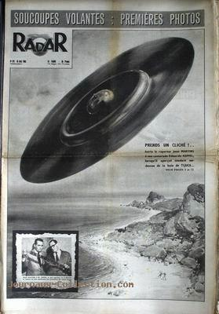

lundi 1 mai à 05:32 Au lac Moses (Washington), 2 employés de l'AEC,
Eggan and Shipley, observent un objet argenté sans ailes voler horizontalement durant <time class="duration">1
minute et 30 secondes</time>
aCas Blue Book n° 1174 non expliqué.
10:50 À la base de l'USAF de George
(Californie), 3 hommes sur un champ de bataille + 1 lieutenant-colonel situé 4miles plus loin, observent durant undefined à mardi 30 5 diques blancs applatis d'un diamètre comparable à l'envergure de C-47
(95pieds) voler rapidement et faire un virage à 90°, le tout en une formation de 3 devant et 2 derrière, puis se
précipitent alentours bCas Blue Book n°
1176 non expliqué
vendredi 5 mai à 22:45 À Tenafly (New Jersey), Mme M. témoin observe 6 ou 7
objets translucides, d'un jaune crêmeux. L'un d'eux se déplace en ellipse, tandis que les autres avancent et
reculent cCas
Blue Book n° 1183 non expliqué.
dimanche 7
15 À la base de l'USAF de Keesler
(Mississippi), le capitaine témoin, un sergent-chef, un staff sergent et un pilote 1ère classe
observent durant undefined à octobre
un objet cylindrique argenté ou d'aluminium se précipiter une dizaine de fois à l'intérieur et à l'extérieur des
nuages dCas Blue Book
n° 1185 non expliqué.
Au-dessus d'une des îles de Barra da Tijuca
(Brésil), Eduardo Keffel, un reporter de la revue O Cruzeiro, en compagnie d'un
ami, João Martins, prend 5 clichés d'un disque de grandes dimensions venant
de la mer à grande vitesse. L'observation dure <time class="duration">1 minute</time>.
lundi 8 mai
Dans l'océan Atlantique au large de Jacksonville (Floride), le pilote et le copilote d'un vol de American Airways
observent une lumière, 10 fois plus grosse qu'une lumière d'atterrissage, venir face à eux, puis se sauver
derrière leur aile gauche.
A La Roche-sur-Yon (France), M. témoin (38 ans, berger) garde le troupeau de moutons
appartenant à M. témoin (ancien cafetier, demeurant place du Marché) au lieu dit "les
Ajoncs" (ancien aérodrome). Alors qu'ils changent de parc, il voit passer un trimoteur blanc puis, quelques
instants après, son fils Maurice (8 ans) s'exclame : Regarde papa, une apparition, la Vierge va venir
(et/ou Papa, regarde ce que l'avion a lâché). Incrédule le père lève les yeux et voit très haut dans le
ciel une sorte de boule blanche (comme une boule de verre) lumineuse dont il ne peut évaluer la grosseur.
Paraissant se tenir immobile, le phénomène entre <time class="duration">30 minutes</time> environ
au-dessus de l'aérodrome avant de disparaître en remontant vers le ciel. Le père affirme que le phéomène était
apparu loin du sillage du trimoteur, et plus haut que ce dernier 1Ce cas figurera sur une liste cas à investiguer par le GEPAN.fParis-Match n°169, 7 juin 1952 < Choloux, Jérôme: "Les ovnis de Vendée", Les Mystères de Vendée, 2007
le lendemain À la base de l'USAF de George (Californie), le A/lc G. C.
Grindeland observe un objet d'un blanc terne en forme de pointe de flèche voler horizontalement durant 10 s gCas Blue Book n° 1194
non expliqué.
le lendemain
samedi 10 mai 1952 À La Roche-sur-Yon (France), 12 (4?) témoins voient 1 disque plat, rouge
brillant, semblant tourner suis lui-même, qui vole silencieusement à une altitude assez basse et dépasse un
2nd ovni rouge remarqué en vol stationnaire à un altitude supérieure (et donc d'apparence plus
petite). La boule observée vient du fond du ciel et descend comme sur une pente inclinée par petites secousses.
Le gros disque monte, paraît être sur le point d'heurter le 2ème mais, après s'êtres rejoints, les 2 phénomènes
disparaissent à grande vitesse hGuieu, J.: Les Soucoupes Volantes viennent d'un autre monde, 1954 < VSD 2007 H.
22:45 à 23:15 À Ellenton (Caroline du Sud),
4 employés de duPont du site nucléaire de Savannah River observent en 5 occasions jusqu'à 4 objets discoïdaux
jaunes iCas Blue Book
n° 1198 non expliqué.
samedi 13 À National City (Californie), des ingénieur du design de Convair, un ancien pilote de la Navy et un astronome amateur observent un objet blanc circulaire luminescent
descendre rapidement et tourner autour d'une zone.
le lendemain À Mayaquez (Puerto Rico) l'attorney et ex-pilote de l'USAF
Stipes ainsi que le Sr. Garcia-Mendez observent 2 sphères oranges brillantes : l'une est stationnaire, l'autre
s'eloigne rapidement puis revient au bout de <time class="duration">30 minutes</time> jCas Blue
Book n° 1213 non expliqué.
samedi 20 22:10 A Houston (Texas), les capitaines J. Spurgin et BB. Stephan, tous 2 pilotes de l'USAF, observent un objet volante brillant ou blanc se déplacer à leurs côtés tout en
effectuant un virage progressif durant <time class="duration">90 secondes</time>
kCas Blue Book n° 1219 non expliqué.
le lendemain Dans le comté de Door (Wisconsin), ou des centaines de personnes voient un ovni pendant une durée
considérable. Coral E. Lorenzen a un rendez-vous avec une
jeune femme au sujet de laquelle elle pense faire un article pour un des journaux pour lesquels elle travaille. Elle
arrive à l'heure mais la jeune femme n'est pas chez elle et Lorenzen décide de marcher quelques patés de maison jusqu'à un
drugstore du coin pour prendre un café. Lorsqu'elle tourne sur la rue principale elle remarque que des gens sont
plantés dans la rue en train de pointer le ciel. Regardant dans la direction désignée, elle voit un objet argenté de
forme elliptique au Nord-Est. Le rédacteur-en-chef du Door County Advocate et un des journalistes qui sont
aussi dans la rue lui disent que l'objet leur a été décrit dans un appel depuis un point plus loin au Nord-Est à
Potawotami Park. Lorenzen entre
immédiatement dans le drugstore et appelle le poste de police local, demandant s'il y a une voiture de patrouille au
voisinage de Fish Creek. On lui répond que oui et elle demande alors de les appeler et de leur demander ce qu'ils
voient. Peu après elle à la réponse : à environ 60 ° d'élévation au Nord-Est ils regardaient un objet plutôt rond
avec une couleur argentée. Elle ressort alors dans la rue, et se positionne le dos à une certaine zone d'un bâtiment
de briques et aligne l'objet en haut du mât d'une antenne de télévision, notant avec précaution le point d'où elle
observait et le point où le mât de l'antenne masquait l'objet. Il ne le masquait pas trop, cependant, il y avait
un peu de l'objet visible de chaque côté du mât, indiquera-t-elle. Entre les conversations avec les officiers
à Fish Creek et ses propres observations elle essaie plusieurs fois de joindre son mari, qui est chez eux. Il ne
répond pas et elle apprendra plus tard qu'il était sorti dans le verger pour faire des tailles. J'étais malade de
déception, dira Jim Lorenzen. Je n'avais jamais rien vu de très suffisamment surprenant dans le ciel pour
que je ne puisse pas l'expliquer et donc j'ai été dégoûté d'avoir raté l'occasion. Cependant, Lorenzen a précautionneusement
mesuré les angles durant l'observation et lorsqu'elle en fournit les résultats à son mari, celui-ci parvient à faire
une triangulation : ils font alors l'approximation que l'objet, observé pendant <time class="duration">40
minutes</time>, était à au moins 40miles au-dessus de la Terre et faisait près de 780pieds de diamètre, excluant l'explication d'un ballon ou
autre objet banal. Tout un tiers de la zone de l'objet devint d'un rouge brillant peu après avoir été observé,
donnant l'apparence, aux jumelles depuis Sturgeon Bay, d'un objet argenté en forme de cigare avec une base rouge luisante.
Lorsqu'il fut observé par le policier à 25miles de là à Fish Creek, il était presque circulaire avec une "ouverture" rouge au centre trop brillante pour
être observé avec des lunettes ordinaires.
jeudi 25Radar n° 172 du 25, titrant à propos de l'affaire de Barra da Tijuca : Soucoupes
volantes : premières photos

21:15 Au lac Walnut (Michigan), 7 personnes, dont John Hoffman, sa famille et des amis, observent
un grand objet blanc circulaire avec des sections sombres sur son contours, voler horizontalement durant <time
class="duration">30 minutes</time> et sembler rouge lorsqu'il est derrière un nuage lCas
Blue Book n° 1227 non expliqué.
Manchette et couverture du numéro du magazine français Radar avec des photos prises à Rio de Janeiro par un reporter : Soucoupes
Volantes : Premières Photos.
dimanche 28
10:30 À Saigon (Indochine française), de nombreuses personnes dans la foule assitant à une
cérémonie observent un objet blanc-argenté en forme de disque voler horizontalement durant <time
class="duration">2 minutes</time>
mCas Blue Book
n° 1232 non expliqué.
13:45 à 14:20 À Albuquerque (Nouveau Mexique), 2 pompiers municipaux observent par 3 fois 2 objets
circulaires — l'un argenté et brillant et l'autre orange ou marron clair — en train d'effectuer des manoeuvres
aériennes très rapides nCas Blue Book n°
1233 non expliqué.
le lendemain A San Antonio (Texas), le major D. W. Feuerstein, pilote de l'USAF, observe depuis le sol un
objet tubulaire brillant s'agiter passer d'une position horizontale à une position verticale durant <time
class="duration">8 minutes</time>, puis retourner lentement à une position horizontale, revenir encore à la
verticale, accélerer, sembler s'allonger et devenir rouge. L'observation totale dure <time class="duration">14
minutes</time>
oCas Blue
Book n° 1236 non expliqué.
mercredi 31 À Chrowon (Corée),
2 gardes militaires observent un ovni, dont le centre est terne et le pourtour brillant, foncer dans le ciel. Un
chasseur F-94 Starfire décolle pour l'intercepter et se livre à un combat aérien, jusqu'à ce que l'ovni accélère et
disparaisse. Le pilote ne peut décrire ni signaler sa taille en raison de la lumière aveuglante de l'objet.